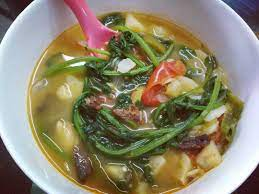
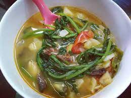

Kangshoi
Manipuri cuisine refers to the cuisine of Manipur, a state of northeastern India. Daily meals are based on rice, with a few side dishes of vegetables, fish and meat.[1] A meal would usually have a vegetable stew called ensaang or athongba, flavored with dried or fried fish; stir-fried vegetables called kanghou; and a spicy item, which could be morok metpa (a chilli paste), iromba (boiled and mashed vegetables with chilli and fermented fish), or singju (a piquant salad). All piquant side dishes are accompanied by a choice of fresh herbs, collectively called maroi. The base and essence of Meitei cuisine is the fermented fish called ngari. Several dishes of meat, mostly chicken and pork,[2] are cooked with unique recipes.[3] A side of steamed (a-ngaanba) or boiled vegetables with a hint of sugar (cham-phut) are also quite common as palate cleansers in most meals.
 

Eromba
Here is another favourite dish among the Manipuris. Their cuisine almost always includes a type of fish called Ngari. Eromba is prepared by boiling a tonne of vegetables along with some fermented fish. It is mixed until the texture becomes like a paste. Finally, it is garnished with maroi and a sprinkle of coriander leaves.
Morok Metpa
Just like coriander chutney is popular in Mumbai city, the Morok Metpa chutney is a hit in Manipur! It is prepared using dried green chillies. The chillies are mashed into a paste and then boiled with some Ngari fish. Once again, it is mashed and then sprinkled with salt. Enjoy it with all kinds of meals.